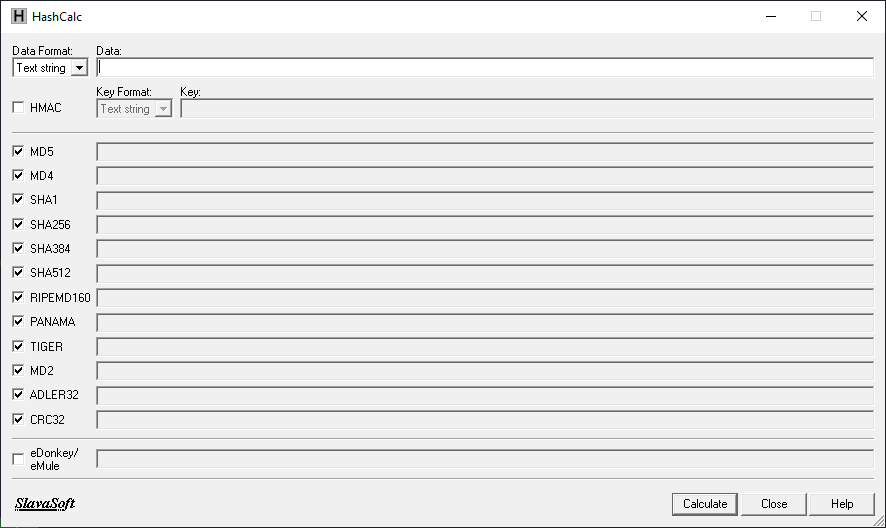
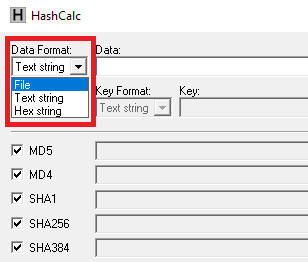
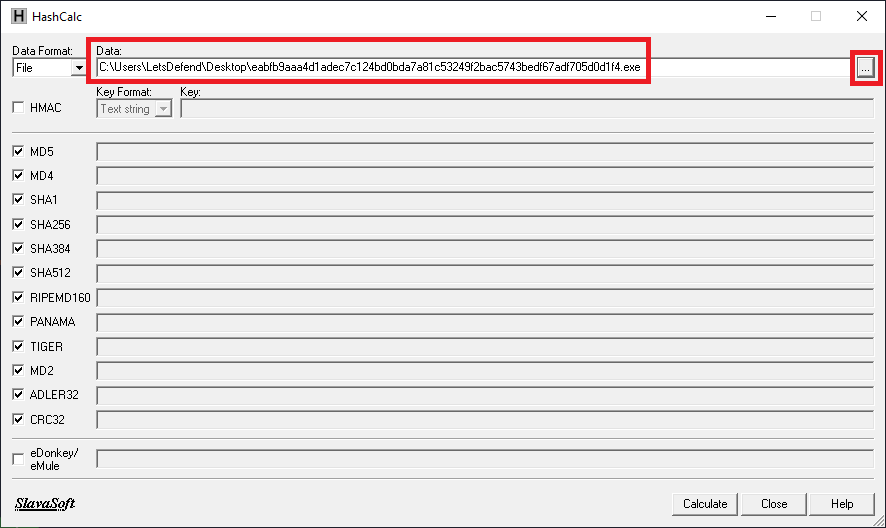
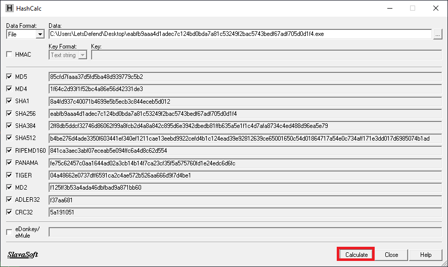
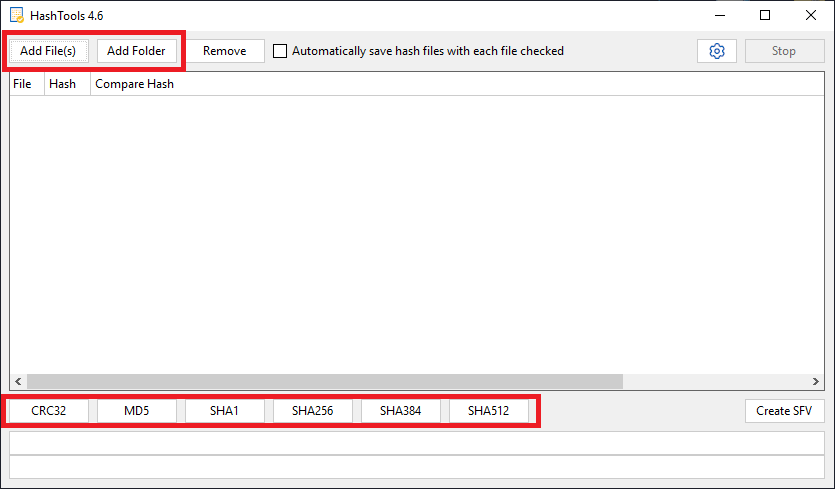
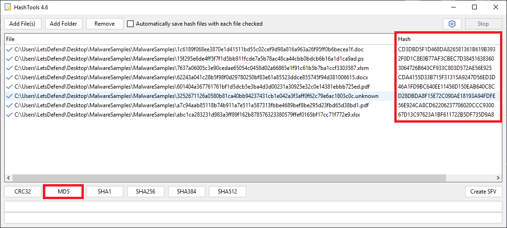
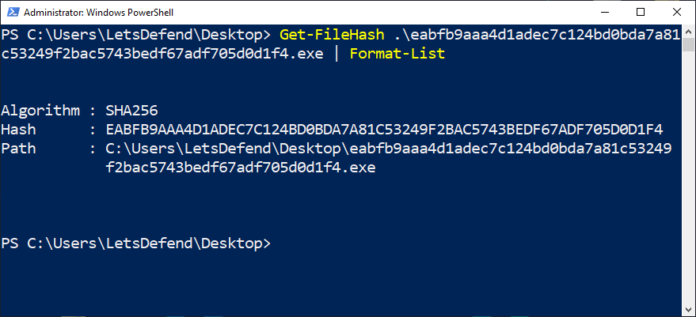
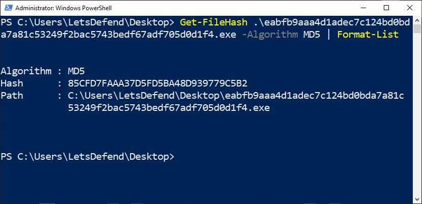
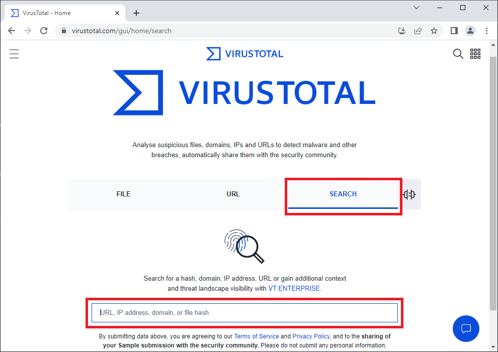
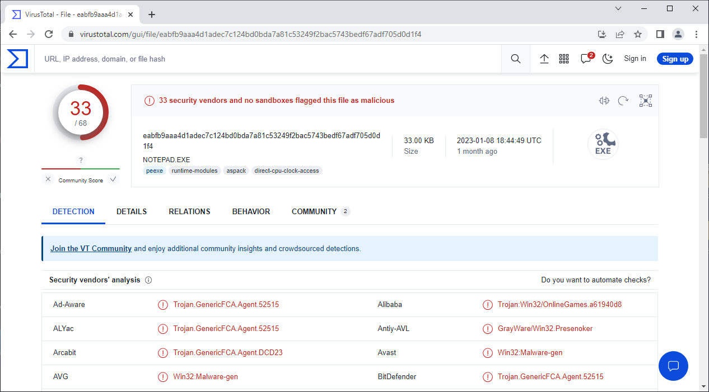

What is File Hash?
A hash is a value generated by a hash algorithm through mathematical calculations applied to a given set of data. Here, the input data for the hash algorithm is the file containing the malware. This specific type of hash is commonly called a “file hash.” It serves as a distinct signature for files.
Note: Hash functions are a broad subject within the field of cryptology. While this course provides an overview of hash functions, it does not delve into the topic extensively. Instead, the focus here is on explaining the hash functions and their use in terms of static malware analysis.
Finding the Hash of the File with the Tool
One of the primary resources in static malware analysis is existing analysis reports, which play a crucial role. The hash value of a file is employed to access these analysis reports. By searching the hash value of a file in well-known signature databases, it is possible to determine if the malware has been previously analyzed and obtain the corresponding analysis results. This approach offers the advantage of avoiding the need to upload the malware file to online sandbox environments. Consequently, if the goal is to prevent the malware file from being publicly published through online sandbox environments, this method ensures confidentiality. However, it is essential to note that if a newly encountered malware lacks preliminary analysis, no analysis reports can be accessed using its hash value.
This section of the training demonstrates various methods for calculating the hash value of a malware file.
There are several tools used to calculate the hash of a file. For example, below “HashCalc” is used to calculate the hash value of the malware.

When the HashCalc tool is launched, it appears as shown in the image above. It is possible to calculate both hash values of files and hash values of texts via the HashCalc tool. To do so, the appropriate option in the “Data Format” field located in the top-left corner should be chosen. “File” as the data format option should be selected:

After selecting the data format, the malware file is provided to the tool for hash calculation.

After selecting the desired hash algorithm for hash calculation using HashCalc as in the above example, the hash values are calculated by clicking the “Calculate” button located at the bottom right of the tool.

As can be seen in the image above, the hash of the malware has been successfully calculated for various hash functions. While the “HashCalc” tool demonstrated above is quite helpful in calculating the hash of individual files, it may not efficiently handle the computation of hash values for multiple files simultaneously. In such cases, alternative tools like “HashTools” are more suitable for calculating the hash of multiple files.
The “HashTools” tool features a graphical user interface that closely resembles the one shown above. When HashTools is initially launched, it will appear as the following:

The files whose hash will be calculated are added to the tool with the help of the buttons in the upper left part of the window seen in the image above. After the files are added, the hash calculation can be performed according to the desired hash algorithm with the help of the buttons at the bottom of the window.

As seen in the image above, the hash values of the files have been successfully calculated in accordance with the MD5 hash algorithm. With this tool, the hash of multiple files can be calculated rapidly. However, calculations are allowed for only one hash algorithm at a time. It is recommended to consider this when deciding which hash tool to use.
The following tools running on Windows can also be used to find the file hash:
HashMyFiles: https://www.nirsoft.net/utils/hash_my_files.html
QuickHash: https://www.quickhash-gui.org/
Obtaining The Hash of The File Through Powershell
In certain scenarios, it may be necessary to calculate file hashes via the command line. In Windows, file hashes can be easily calculated using Powershell. For example, let’s calculate the hash of malware using Powershell:
Command: ```
Get-FileHash .\eabfb9aaa4d1adec7c124bd0bda7a81c53249f2bac5743bedf67adf705d0d1f4.exe | Format-List
As shown in the image above, the file hash can be calculated using the “Get-FileHash” command in PowerShell. The command can work with just a single parameter, which is the file’s name. By default, the calculation is performed using the SHA256 hash function. If a different hash function is needed, the “-Algorithm” parameter should be added. As an instance of this, let’s calculate the hash of the same malware file using the MD5 hash function.
Command:
Get-FileHash .\eabfb9aaa4d1adec7c124bd0bda7a81c53249f2bac5743bedf67adf705d0d1f4.exe -Algorithm MD5 | Format-List
As in the image above, the hash calculation for the MD5 hash function has been performed successfully.
Note: The PowerShell command mentioned above, “Format-List,” enables the output to be presented in a list format. When this command is omitted, the output will be displayed on a single line.
Information Gathering with File Hash
The previous section demonstrated the process of calculating the hash of a malware file. In this part of the training, the various resources that can be utilized to gather information about malware are introduced using the hash value. The following list of resources can be used to collect information about the malware using File Hash:
- VirusTotal: https://www.virustotal.com/gui/home/search
- AnyRun: https://app.any.run/submissions/
- Joe Sandbox: https://www.joesandbox.com/#windows
- Hybrid Analysis: https://www.hybrid-analysis.com/
- MetaDefender: https://metadefender.opswat.com/
- EchoTrail: https://www.echotrail.io/
- Intezer: https://analyze.intezer.com/scan
- FileScan.IO: https://www.filescan.io/scan
- InQuest Labs: https://labs.inquest.net/dfi/search/hash/sha256
- Manalyzer: https://manalyzer.org/
- SandboxPikkerEE: https://sandbox.pikker.ee/
- Yomi: https://yomi.yoroi.company/upload
VirusTotal
VirusTotal is one of the prominent sources for searching hashes of malware and accessing available analysis reports. The image of the web page is as follows:

The current analysis report can be accessed by searching the hash in the search section seen in the image above. For example, the analysis report of a malware is as follows:

The image above displays a section of the analysis report. VirusTotal is a valuable resource that provides extensive information about malware.